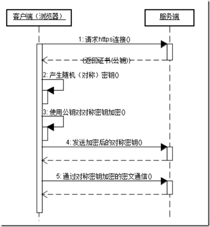
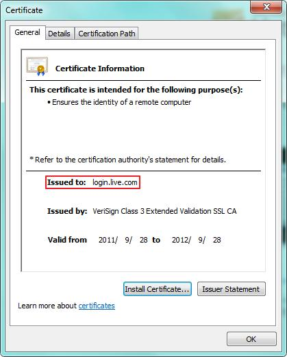
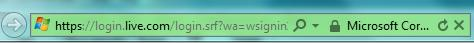
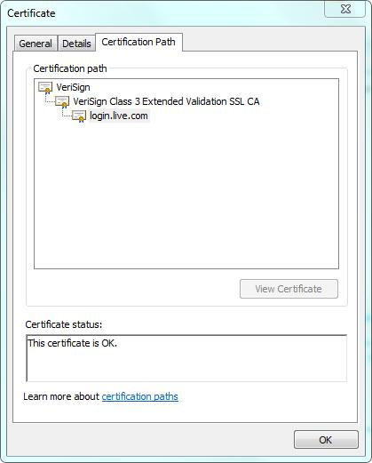
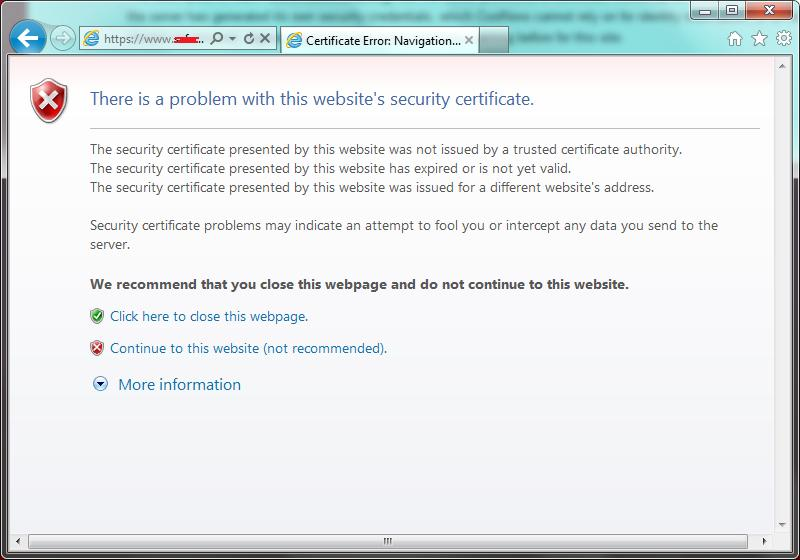
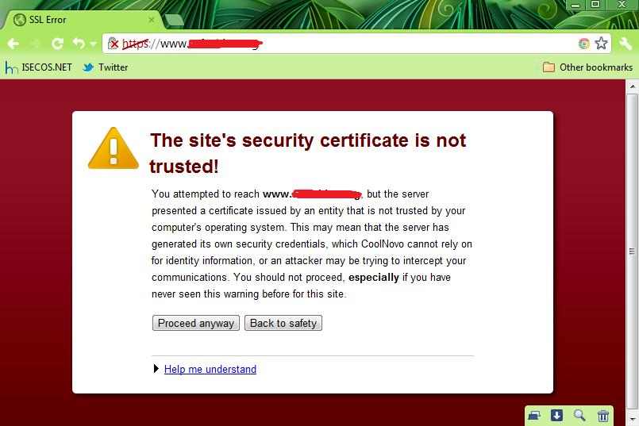

HTTPSの概要
ハイパーテキスト転送プロトコルセキュア（英語：Hypertext Transfer Protocol Secure、略称：HTTPS、しばしばHTTP over TLS、HTTP over SSL、またはHTTP Secureとも呼ばれる）は、ネットワークセキュリティ伝送プロトコルの一種です。具体的な説明の前に、まずこれまで一般的に使われてきたHTTPについて紹介します。HTTPは、私たちが普段Webページを閲覧するときに使用するプロトコルです。HTTPプロトコルで送信されるデータは暗号化されておらず、平文のままです。そのため、HTTPプロトコルでプライバシー情報を送信するのは非常に安全ではありません。HTTPは80番ポートで通信し、HTTPSは443番ポートで通信します。コンピュータネットワーク上では、HTTPSはHTTP（ハイパーテキスト転送プロトコル）を介して通信しますが、SSL/TLSを使用してデータパケットを暗号化します。HTTPSが開発された主な目的は、Webサーバーの身元認証を提供し、交換データのプライバシーと完全性を保護することです。このプロトコルは、1994年にネットスケープコミュニケーションズ（Netscape）によって初めて提案され、その後インターネット全体に拡大しました。
HTTPSの動作原理
HTTPSはデータを送信する前に、クライアント（ブラウザ）とサーバー（Webサイト）の間でハンドシェイクを行う必要があります。このハンドシェイクの過程で、双方がデータを暗号化して送信するための鍵情報が確立されます。TLS/SSLプロトコルは単なる暗号化通信プロトコルではなく、アーティストが丹精込めて設計した芸術作品ともいえるものです。TLS/SSLでは、公開鍵暗号（非対称暗号）、共通鍵暗号（対称暗号）、およびHASHアルゴリズムが使用されています。ハンドシェイクの具体的な手順は次のとおりです：
- 1）ブラウザは自分がサポートする一連の暗号化規則をWebサイトに送信します。
- 2）Webサイトはその中から暗号化アルゴリズムとHASHアルゴリズムを選択し、自身の身元情報を証明書の形でブラウザに送り返します。証明書には、Webサイトのアドレス、暗号化用の公開鍵、証明書の発行機関などの情報が含まれています。
- 3）ブラウザはWebサイトの証明書を取得した後、以下の作業を行います： a) 証明書の正当性を検証します（証明書を発行した機関が正当かどうか、証明書に含まれるWebサイトのアドレスが現在アクセスしているアドレスと一致するかどうかなど）。証明書が信頼できる場合、ブラウザのアドレスバーに小さな鍵アイコンが表示されます。それ以外の場合は、証明書が信頼できないという警告が表示されます。 b) 証明書が信頼できる場合、またはユーザーが信頼できない証明書を受け入れた場合、ブラウザは乱数による鍵を生成し、証明書に含まれる公開鍵で暗号化します。 c) 取り決めたHASHアルゴリズムを使用してハンドシェイクメッセージを計算し、生成した乱数（鍵）でメッセージを暗号化し、最後に先ほど生成したすべての情報をWebサイトに送信します。
- 4）Webサイトはブラウザから送信されたデータを受信した後、以下の操作を行います： a) 自分の秘密鍵を使用して情報を復号し、鍵を取り出します。その鍵を使ってブラウザから送信されたハンドシェイクメッセージを復号し、HASHがブラウザから送信されたものと一致するかを検証します。 b) その鍵でハンドシェイクメッセージを暗号化し、ブラウザに送信します。
- 5）ブラウザはハンドシェイクメッセージを復号してHASHを計算し、サーバーから送信されたHASHと一致すれば、ここでハンドシェイクプロセスは終了します。以降のすべての通信データは、先ほどブラウザが生成した乱数による鍵と対称暗号アルゴリズムを使用して暗号化されます。
ここでブラウザとWebサイトが互いに暗号化されたハンドシェイクメッセージを送信して検証する目的は、双方が同じ鍵を取得し、正常にデータを暗号化・復号できることを保証し、その後の実際のデータ転送のためのテストを行うことです。また、HTTPSで一般的に使用される暗号化アルゴリズムとHASHアルゴリズムは次のとおりです：
- 非対称暗号アルゴリズム：RSA、DSA/DSS
- 対称暗号アルゴリズム：AES、RC4、3DES
- HASHアルゴリズム：MD5、SHA1、SHA256
HTTPSの通信シーケンス図は次のとおりです。

HTTPSプロトコルとHTTPプロトコルの違い：
- HTTPSプロトコルではCAに証明書を申請する必要があり、無料の証明書はほとんどなく、費用を支払う必要があります。
- HTTPはハイパーテキスト転送プロトコルで、情報は平文で送信されます。一方、HTTPSはセキュリティを備えたSSL暗号化転送プロトコルです。
- HTTPとHTTPSは使用する接続方法が完全に異なり、使用するポートも異なります。前者は80番、後者は443番です。
- HTTPの接続は非常に単純で、ステートレスです。
- HTTPSプロトコルは、SSL+HTTPプロトコルによって構築された、暗号化転送や身元認証が可能なネットワークプロトコルであり、HTTPプロトコルよりも安全です。
SSL 証明書
ここまでの説明から、HTTPSの中核となる部分の1つがデータ送信前のハンドシェイクであり、そのハンドシェイクの過程でデータ暗号化の鍵が確定されることがわかります。ハンドシェイクの過程で、WebサイトはブラウザにSSL証明書を送信します。SSL証明書は、私たちが日常的に使う身分証明書に似た、HTTPS対応サイトの身元証明です。SSL証明書には、Webサイトのドメイン名、証明書の有効期限、証明書の発行機関、そして暗号化通信に使う鍵を暗号化するための公開鍵などの情報が含まれています。公開鍵で暗号化された鍵は、証明書の申請時に生成された秘密鍵でのみ復号できるため、ブラウザは鍵を生成する前に、現在アクセスしているドメイン名と証明書に紐づくドメイン名が一致しているかを確認し、さらに証明書の発行機関の検証も行う必要があります。検証に失敗すると、ブラウザは証明書エラーの警告を表示します。この部分では、SSL証明書の検証プロセスと、個人ユーザーがHTTPSサイトにアクセスする際に、SSL証明書の利用に関して注意すべきセキュリティ上の問題について説明します。
証明書の種類
実際には、私たちが使用する証明書にはさまざまな種類があり、SSL証明書はその1つにすぎません。証明書の形式はX.509標準で定義されています。SSL証明書は公開鍵の転送を担うPKI（Public Key Infrastructure、公開鍵基盤）証明書です。私たちがよく見かける証明書は、用途に応じておおよそ次のように分類できます：
- 1、SSL証明書：HTTPプロトコルの暗号化に使用され、つまりHTTPSです。
- 2、コード署名証明書：バイナリファイルの署名に使用されます。たとえば、Windowsカーネルドライバー、Firefoxプラグイン、Javaコード署名などです。
- 3、クライアント証明書：メールの暗号化に使用されます。
- 4、二要素証明書：ネットバンキング専門版で使用されるUSB Keyの中に入っているのがこのタイプの証明書です。
これらの証明書はすべて、認定された証明書発行機関——私たちがCA（Certificate Authority）機関と呼ぶ組織——によって発行されます。企業と個人で申請できる証明書の種類も異なり、価格も異なります。CA機関が発行する証明書はすべて信頼される証明書です。SSL証明書の場合、アクセスしたWebサイトが証明書に紐づくWebサイトと一致していれば、ブラウザの検証を通過し、エラーは表示されません。
SSL証明書の申請と規則
SSL証明書は、CA機関に費用を支払って申請することもできますし、自分で作成することもできます。CA機関が発行する証明書は非常に高額で、有効期限も通常1年から3年までさまざまです（年数によって価格も異なります）。期限が切れたら再度費用を支払って申請しなければならないため、一般的に証明書を申請するのは企業だけです。しかし、個人サイトの増加に伴い、現在では個人向けのSSL証明書サービスもあり、価格は比較的安くなっています。中国国内であれば400元余りで1つ申請できますし、海外では無料のSSL証明書を申請できるところもあります。SSL証明書を申請する際には、CA機関にWebサイトのドメイン名、営業許可証、申請者の身元情報などを提供する必要があります。Webサイトのドメイン名は非常に重要で、申請者は自分がそのドメイン名の所有権を持っていることを証明しなければなりません。もしHotmail.comやGmail.comのSSL証明書を誰でも簡単に申請できるとしたら、ハッカーは偽の証明書を使って騙す必要がなくなってしまいます。
さらに、通常1つの証明書は1つのドメイン名にのみ紐づいています。CA機関の機嫌がよければ、無料でもう1つ紐づけてくれることもあります。たとえば、申請時に紐づけるドメイン名が www.runoob.com の場合、ブラウザのアドレスが https://www.runoob.com のときだけこの証明書は信頼されます。アドレスが https://tt.runoob.com や https://login.runoob.com の場合は、アクセスしているドメイン名が証明書に紐づくドメイン名と異なるため、その証明書は依然としてブラウザ上で信頼できないものとして表示されます。
CA機関はワイルドカードドメイン名（例：*.runoob.com）の申請も提供しています。ワイルドカードドメイン名は、メインドメイン配下のすべてのドメイン名に紐づくのと同じなので、非常に便利ですが、価格は非常に高く、ワイルドカードドメイン名1つで年間およそ5000元かかります。申請できるのは企業だけです。
次に、実際の証明書の情報を見てみましょう。

Hotmailにアクセスするとlogin.live.comにリダイレクトされます。このとき、IEブラウザに小さな鍵アイコンが表示されます。その鍵アイコンをクリックし、その中の「証明書の表示」をクリックすると、上図の証明書ウィンドウが表示されます。ここで、この証明書には1つの用途しかないことがわかります——リモートコンピュータへの身元情報の証明です。証明書の用途にはさまざまなものがあり、SSLはそのうちの1つにすぎません。「発行先」の項目は、この証明書が申請時に紐づけられたドメイン名です。その下の「発行者」は証明書の発行機関です。一番下にある2つの日付は、証明書の申請日と有効期限です。ここで「発行者」の情報に注目してください。「Extended Validation SSL」という文字があり、この証明書がEV SSL証明書（拡張検証SSL証明書）であることを示しています。EV SSL証明書には、ブラウザのアドレスバーを緑色に変え、証明書の所有者である会社名を表示させるという特徴があります。下図のとおりです：

EV SSL証明書は他の証明書と比べて費用が高くなります。
上記はCA機関に証明書を申請する場合の話です。個人サイトで単に通信を暗号化したいだけなら、SSL証明書を自分で作成することもできます。自分で作成した証明書はブラウザから信頼されず、アクセス時に証明書の検証が失敗するため警告が表示されます。
証明書の検証プロセス
証明書は証明書チェーンの形式で構成されます。証明書を発行する際には、まずルートCA機関が発行したルート証明書が必要であり、次にルートCA機関が中間CA機関の証明書を発行し、最後に中間CA機関が具体的なSSL証明書を発行します。次のように理解できます。ルートCA機関は1つの会社であり、ルート証明書はその身分証明書です。各会社は異なる部門が異なる用途の証明書を発行します。これらの異なる部門が中間CA機関であり、これらの中間CA機関は中間証明書を自身の身分証明書として使用します。その中の1つの部門はSSL証明書を専門に発行します。ルート証明書、中間証明書、および最後に申請したSSL証明書をつなぎ合わせると証明書チェーンが形成され、これは証明書パスとも呼ばれます。証明書を検証する際、ブラウザはシステムの証明書マネージャーインターフェースを呼び出して、証明書パス内のすべての証明書をレベルごとに検証します。パス内のすべての証明書が信頼されている場合のみ、検証結果全体が信頼できます。引き続きlogin.live.comのこの証明書を例に挙げます。証明書を表示するときに「証明書パス」タブをクリックすると、下図のように表示されます。

ルート証明書は最も重要な証明書です。ルート証明書が信頼されていない場合、その下で発行されたすべての証明書は信頼されません。オペレーティングシステムはインストール中に、信頼されたCA機関のルート証明書をデフォルトでいくつかインストールします。「ファイル名を指定して実行」で「certmgr.msc」を実行すると、証明書マネージャーを起動できます。下図のようになります。
ルート証明書は有効期限が長く、サポートする用途も多いため、さまざまな用途タイプの中間証明書を発行しやすくなっています。中間証明書は用途が単一で、有効期限は比較的短いですが、具体的なSSL証明書よりははるかに長いです。
SSL証明書の検証に失敗した場合、ブラウザによって以下のエラーメッセージが表示されます。


SSL証明書の検証失敗には、以下の3つの原因があります。
- 1、SSL証明書が信頼されたCA機関によって発行されていない
- 2、証明書の有効期限が切れている
- 3、アクセスしたWebサイトのドメイン名が証明書にバインドされているドメイン名と一致しない
この3つの原因は、IEブラウザが表示するメッセージでもあります。
ヒント：特定のルート証明書CA機関が気に入らない場合は、そのルート証明書を削除できます。そうすれば、そのCA機関が発行したすべての証明書が信頼されなくなります。
SSL証明書のセキュリティ問題
HTTPSに対する最も一般的な攻撃手段は、SSL証明書のなりすまし、またはSSLハイジャックと呼ばれるもので、典型的な中間者攻撃です。ただし、SSLハイジャックは攻撃目的のためだけに使われるわけではなく、特別な状況ではSSLハイジャックを利用してネットワークによりスムーズにアクセスできることもあります。これについては後述します。
攻撃を目的としたSSLハイジャックは、ブラウザのセキュリティ警告に注意しないと、簡単に被害に遭います。ネットワーク内で中間者がSSLハイジャック攻撃を仕掛ける場合、攻撃者は偽造したSSL証明書をブラウザに送信する必要があります。このとき、偽造されたSSL証明書は信頼されていないため、ブラウザは警告を表示します。
ここには誤解があります。SSL証明書が信頼されていない場合、必ずしもSSLハイジャックが発生しているとは限りません。例外として、一部の個人サイトは合法的なSSL証明書を購入できないため、自分でSSL証明書を作成して送信データを暗号化している場合があります。あなたがよく訪問する個人サイトがあり、そのサイトが何をするものかを知っているなら、この状況は心配する必要はありません。しかし、オンラインバンキング、オンライン決済、またはhotmail.com、gmail.comなどの企業系サイトにアクセスする場合、これらのサイトは必ず合法的なSSL証明書を申請しています（12306.cnを除く）。SSL証明書が信頼されない場合は、ためらわずにアクセスを中止すべきです。このとき、ネットワーク内に必ず異常な動作が存在します。一部の集合住宅向けブロードバンドユーザーはこの点に特に注意してください。
したがって、個人ユーザーとしては、自分がアクセスしているサイトが何であるかを必ず知っておく必要があります。あなたがコンピュータの知識があまりない一般のネットユーザーであれば、自分でSSL証明書を作成している個人サイト（12306.cnを除く）に頻繁にアクセスすることはないでしょう。そのため、ネットワークに異常があるかどうかを判断できない場合、証明書に問題がある限り、アクセスをやめたほうがよいです。
ヒント：12306.cnについては、必ずWebサイトの指示に従って、「スムーズなチケット購入のため、ルート証明書をダウンロードしてインストールしてください」としてください。
最後に、SSL証明書を使用する際に注意すべき問題をまとめます。
- 1、必要でない限り、むやみにルート証明書をインストールしないでください。ルート証明書をインストールする際は、必ず証明書の提供元を明確にしてください。
- 2、オンラインバンキング、オンライン決済、重要なメールなどのWebサイトについては、SSL証明書に問題がないことを必ず確認してください。ブラウザがSSL証明書エラーの警告を表示した場合は、必ずアクセスを拒否してください。一部の集合住宅向けブロードバンドユーザーはこの点に特に注意してください。
- 3、現在は個人でもSSL証明書の申請が比較的安いため、合法的なSSL証明書を付けたフィッシングサイト（海外でよく見られます）に注意してください。フィッシングサイトについては、必ずドメイン名をよく確認し、当選メールなどのメッセージを信じないでください。また、フィッシング防止機能付きのセキュリティソフトウェアをインストールしてください。